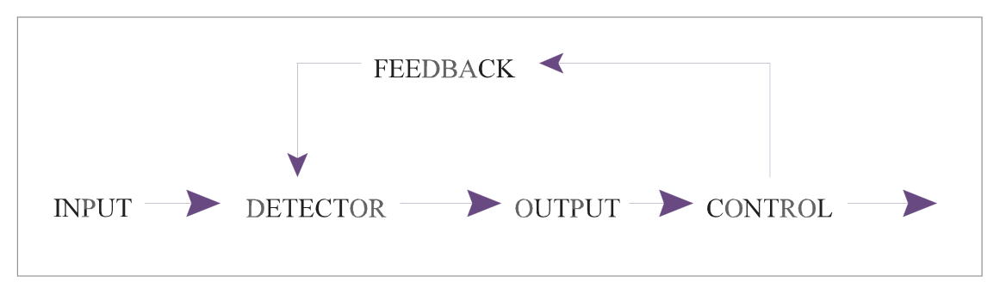
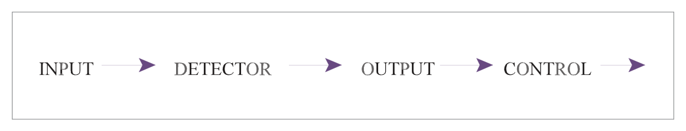
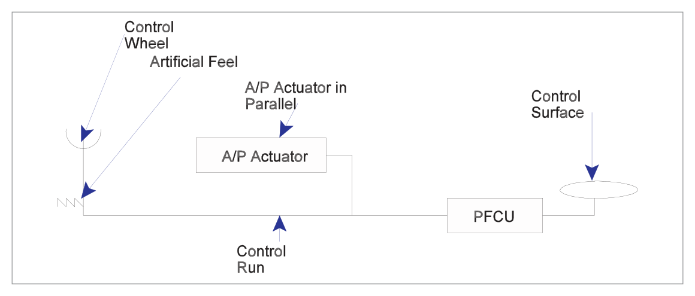
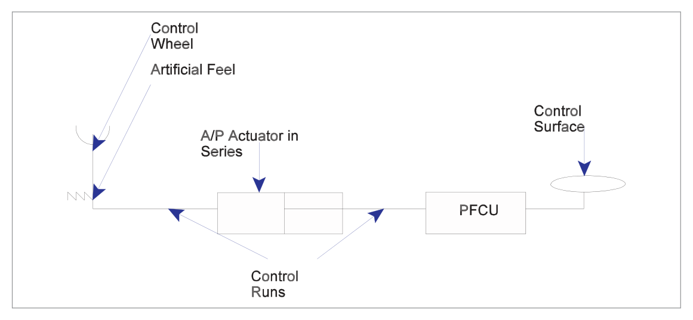
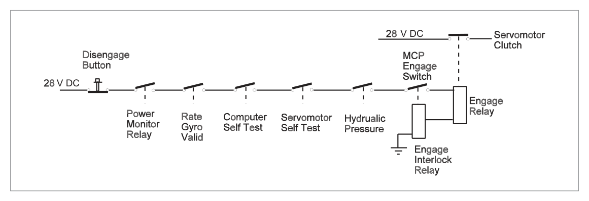
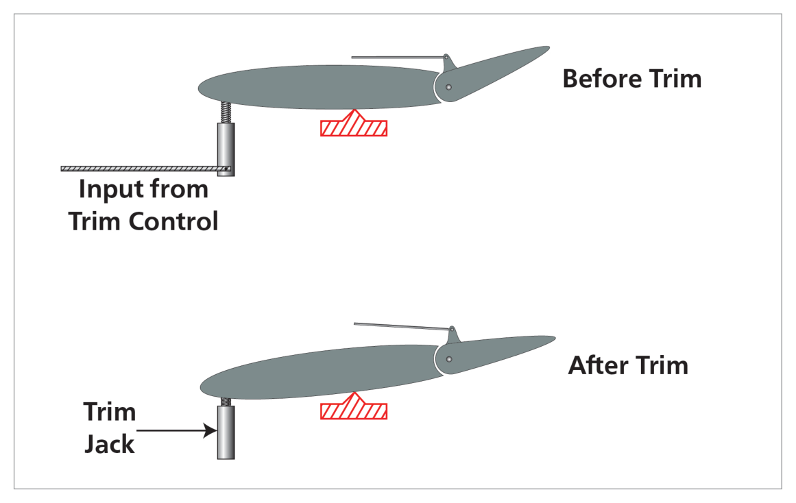
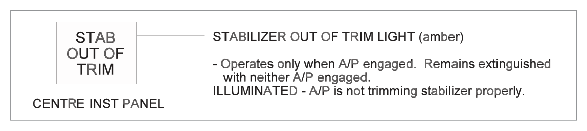
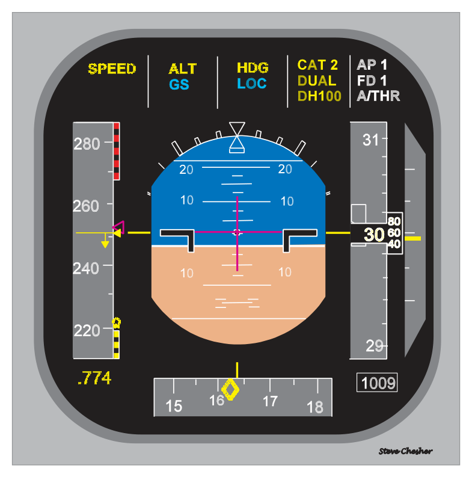
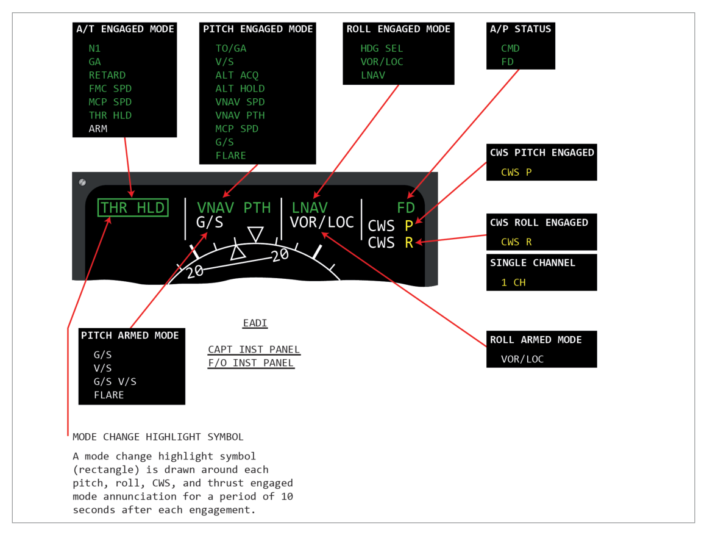

What this section covers: Why autopilots exist, and the two primary reasons they were introduced.
The main purpose of the autopilot is to relieve the pilot of physical and mental fatigue, especially during long flights, resulting in the pilot being more alert during the critical landing phase. Modern airliners can fly almost the entire route automatically when combined with an autothrottle.
Two Primary Reasons for Autopilot Introduction:
Reduction in Workload: Crew are more rested for demanding flight phases; allows concentration on other tasks (navigation, system management)
Response Time: Autopilot detects and corrects disturbances in approximately 50 ms. A human pilot: ~200 ms (1/5 second) to detect, then additional delay to decide and apply control
Important Limitation: The autopilot does NOT carry out the take-off — this must be done by the pilot. The autopilot can be engaged shortly after take-off at approximately 400 feet or possibly lower.
2. Fail-Safe Autopilot
What this section covers: How autopilots protect against runaways and malfunctions.
With any automatic system, protection against malfunctions (particularly runaways) is achieved by:
Limiting actuator authority (maximum deflection), OR
Limiting actuator travel rate
The pilot must always be able to override the effects of a malfunction and retain control. Such a system is called a fail-safe system — applies to any single autopilot.
3. Control Loops — Inner & Outer
What this section covers: The fundamental architecture of autopilot control — closed loop vs open loop, inner loop vs outer loop.
Closed Loop vs Open Loop
Type
Description
Example
Open Loop
No feedback; output does not affect input
Central heating with timer only — runs regardless of room temperature
Closed Loop
Output fed back to input; error is corrected
Central heating with thermostat — stops when temperature is reached
A servomechanism is a closed loop control system where a small input is converted into a larger output in a strictly proportionate manner.
Basic Closed Loop Elements
flowchart LR
A["Input\n(Desired attitude)"] --> B["Error Detector\n/ Signal Processor"]
B --> C["Control Element\n(Servomotor)"]
C --> D["Output\n(Control surface)"]
D --> E["Feedback\n(Gyro senses result)"]
E --> B

Fig 26.1 — Closed Loop Control (source p.354)

Fig 26.2 — Open Loop Control (source p.354)
Exam Tip: The domestic thermostat analogy is a classic exam aid — with timer = open loop; with thermostat = closed loop. The autopilot inner loop is always a closed loop (feedback-controlled) system.
Inner Loop vs Outer Loop
Loop Type
Function
Example Modes
Inner Loop
Auto-stability only — keeps aircraft in selected attitude against disturbances
Roll stabilization, pitch stabilization
Outer Loop
Flight path guidance — commands the inner loop to achieve desired flight path
Altitude Hold, Heading Hold, LNAV, VNAV
4. Aircraft Inner Loop Control System
What this section covers: Components and operation of the inner (closed) loop.
Converts mechanical gyro movement into electrical signal
Signal Processor
Error detector; compares transducer signal with input; determines corrective action; transmits to servomotor
Servomotor
Converts processed signal into control surface movement proportional to rate and direction; uses hydraulic, electrical or pneumatic power
Aerodynamic Feedback
Aircraft attitude change is sensed by rate gyro; provides measure of output
A disturbance produces an error signal → autopilot moves aircraft back toward stabilized condition → error signal progressively reduces → control surface deflection removed when disturbance corrected.
5. Types of Autopilot (Axes)
What this section covers: Single, two, and three axis autopilot systems and which axis is primary.
Aircraft can be disturbed about three axes — longitudinal (roll), lateral (pitch) and vertical/normal (yaw). Each axis requires its own inner loop channel:
Axis
Controls
Alternative Name
Roll
Ailerons
Primary axis
Pitch
Elevators
Secondary axis
Yaw
Rudder
Third / Tertiary axis
Autopilot Type
Axes Controlled
Description
Single Axis
Roll only
"Wing Leveller" — lateral stability only
Two Axis
Roll + Pitch
Controls ailerons and elevators
Three Axis
Roll + Pitch + Yaw
Full attitude control; required for autoland
Key Facts:
Roll and pitch channels = primary outer loop control channels
Rudder channel = essentially a stability channel
Roll–rudder interaction assists coordinated turns and faster stability response
Three-axis control is required for autoland
6. EU-OPS Requirements
What this section covers: Regulatory requirements for autopilot installation, operation, and single-pilot IFR operations.
Single Pilot IFR or Night Operations:
An operator shall not conduct single pilot IFR operations unless the aeroplane is equipped with an autopilot with at least ALTITUDE HOLD and HEADING MODE. This requires at least a two-axis autopilot.
Autopilot Installation Requirements
Must be approved; must be designed so autopilot can be quickly and positively disengaged to prevent interference with aeroplane control
Unless automatic synchronizing — must have means to indicate alignment of actuating device relative to control system
Manually operated controls must be readily accessible to the pilots
Quick release (emergency) controls must be on BOTH control wheels, on the side opposite the throttles
Attitude controls must operate in the plane and sense specified for cockpit controls; direction of motion plainly indicated
System must not produce hazardous loads or create hazardous deviations — during normal operation OR in the event of malfunction
Means must be provided to indicate current mode and any armed modes to the pilots
7. Types of Actuator
What this section covers: Actuator types and configurations.
Actuators produce physical movement of control surfaces. Types by principle of operation:
Electromechanical
Electrohydraulic
Pneumatic
Actuator Configurations
Configuration
Description
Parallel
Actuator moves the control surface AND provides feedback to the control stick (stick moves when A/P is controlling)
Series
Actuator moves the control surface but NOT the control stick
Combined Series/Parallel
Both types used together

Fig 26.5 — A/P Actuator in parallel configuration (source p.359)

Fig 26.6 — A/P Actuator in series configuration (source p.359)
Torque Limiter
Limits torque applied to servomotors to prevent excessive structural loads and guard against servomotor runaway (full hard-over deflection). Implemented by mechanical, electrical or electromechanical principles.
8. Engagement Criteria & Interlocks
What this section covers: How the autopilot ensures it is safe to engage before connecting to the aircraft's flight controls.
Before coupling, the integrity of the Autopilot Inner Loop must be established. A system of interlocks closes to allow engagement and holds it engaged only if correct valid signals have been received.

Fig 26.7 — Interlock relay series for autopilot engagement (source p.360)

Fig 26.8 — Autopilot trim/engagement system (source p.363)

Fig 26.9 — A/P mode control (source p.364)
9. Trim
What this section covers: How the autopilot uses trim and the importance of trim for safety.
The autopilot uses trim to relieve persistent control surface deflections. This prevents the control surfaces from working at the limit of their travel. On engagement, the autopilot synchronizes with the current trim condition. If trim becomes significantly out of position, disengage warnings activate.
A/P Disengage Warning — Steady Red:
Stabilizer out of trim below 800 ft RA on a dual channel approach
ALT ACQ mode inhibited during A/P go-around
Disengage light test switch in position 2 (red filament test)
Automatic ground system test fail
Flashing Amber: A/P automatically reverted to CWS pitch or roll while in CMD.
10. Fly-by-Wire
What this section covers: Brief introduction to fly-by-wire as an extension of autopilot concepts.
In conventional aircraft, the pilot's control inputs are transmitted mechanically via cables and linkages to the control surfaces. In fly-by-wire aircraft, control inputs are transmitted as electrical signals processed by a flight control computer (FCC). The FCC applies the pilot's demands while also applying envelope protection — the computer can refuse or modify commands that would exceed aircraft limits.
11. Outer Loop — Flight Path Modes
What this section covers: How outer loop modes guide the aircraft through specific flight paths.
Outer loop modes interact with the inner loop to give the aeroplane guidance to achieve a required flight path. Roll and pitch channels receive outer loop signals. Common outer loop functions:

Fig 26.11 — Aircraft sensor inputs to the autoflight computer (source p.366)

Fig 26.12 — Inputs to the MCP (source p.367)
Boeing 737-400 AFDS Overview
The Automatic Flight System (AFS) for the 737-400 consists of:
AFDS (Autopilot Flight Director System) — dual system with 2 FCCs (A and B) + single MCP
What this section covers: All roll outer loop modes for the AFDS.
Heading Select (HDG SEL)
Roll commands to turn and maintain MCP heading display. Bank angle limited by Bank Angle Limit Selector on MCP. Automatically disengages upon capture of selected radio course in VOR LOC and APP modes.
VOR Localizer Tracking (VOR LOC)
VOR frequency tuned → VOR mode; ILS frequency tuned → LOC mode
Back-course tracking NOT available
Localizer capture occurs not later than ½ dot deviation
Cone of Confusion (VOR Over-station)
As aircraft approaches VOR, the CDI becomes more sensitive. At a point before the cone of confusion, "over station sensing" circuits cut off VOR signals and the roll channel automatically de-couples from the radio beam. The aircraft continues through the cone on the drift-corrected heading existing at de-coupling (Heading Hold mode). After a set period it reverts to VOR mode.
Exam Tip — Cone of Confusion: The autopilot goes into Heading Hold (not Heading Mode/Select) through the cone. The distinction matters — Heading Hold maintains the current heading; Heading Mode/Select would command a new heading.
Lateral Navigation (L NAV)
FMC controls AFDS roll to intercept and track the active FMC route. Can include SIDs, STARs, and instrument approaches.
L NAV Capture Criteria:
Within 3 NM of active route segment — always satisfies capture criteria
Outside 3 NM — must be on intercept course of 90° or less and intercept before active waypoint
L NAV Auto-Disconnect: End of active route, route discontinuity, intercepting/missing approach path inbound track, loss of capture criteria, or HDG SEL selected.
14. Outer Loop Pitch Modes
What this section covers: All pitch outer loop modes for the AFDS.
Altitude Hold (ALT HLD)
Pitch commands to hold MCP selected altitude or uncorrected barometric altitude at which ALT HOLD switch was pressed. Inhibited after glide slope capture. After ALT HOLD engages, changes in barometric settings do NOT change the selected altitude reference.
Altitude Acquire (ALT ACQ)
Automatic transition manoeuvre from V/S, LVL CHG, or V NAV to MCP selected altitude. Annunciated ALT ACQ. Inhibited when ALT HOLD switch pressed or while GS is captured.
IAS/MACH Hold (SPD)
Holds selected IAS or Mach number by comparing with actual ADC value and pitching up/down to decrease/increase speed.
Vertical Speed (V/S)
Pitch commands to hold selected vertical speed; engages A/T in SPEED mode to hold selected airspeed. V/S becomes armed when in ALT HOLD at selected altitude and new MCP altitude is selected more than 100 ft different from previous.
Level Change (LVL CHG)
Coordinates pitch and thrust to make automatic climbs/descents to preselected altitude at selected airspeed.
Climb: annunciations = MCP SPD (pitch) + N1 (A/T)
Descent: annunciations = MCP SPD (pitch) + RETARD (A/T, reducing toward idle) → ARM at idle
Vertical Navigation (V NAV)
FMC commands AFDS pitch and A/T modes to fly the vertical profile. Includes climbs, cruise altitudes, speeds, descents, and altitude constraints at waypoints.
V NAV Path descent disengages when:
Glide slope captured, OR
Another pitch mode selected, OR
Flaps extended beyond 15°, OR
L NAV disengaged without GS capture
15. Control Wheel Steering (CWS) & Touch Control Steering (TCS)
What this section covers: CWS and TCS — methods of manually directing the autopilot without disconnecting it.
Control Wheel Steering (CWS)
Allows pilot to manoeuvre the aircraft in pitch and/or roll through the automatic control system without disconnecting the autopilot. Signals produced by transducers in the control column. The A/P manoeuvres the aircraft in response to control pressure; when pressure released, A/P holds existing attitude.
CWS Heading Hold Feature (when bank released):
If aileron pressure released with 6° or less angle of bank, A/P rolls wings level and holds existing heading.
Inhibited when:
Below 1500 ft RA with landing gear down
After FD VOR capture with TAS 250 kt or less
After FD LOC capture in the APP mode
Touch Control Steering (TCS)
Also allows pilot to manoeuvre without disconnecting autopilot, but unlike CWS, the appropriate A/P channels and servomotors are disengaged while the TCS button is held. The pilot flies manually to desired attitude. On TCS button release, autopilot re-engages and holds the aircraft in that attitude.
Feature
CWS
TCS
A/P channels during manoeuvre
Still engaged — A/P responds to stick force
Disengaged — pilot has direct control
Activation
CWS engage switch
TCS button held depressed
On release
A/P holds existing attitude
A/P re-engages and holds attitude
16. Autopilot Limitations & Gain Adaption
What this section covers: Normal A/P pitch/roll limits and why gain adaption is needed.
Maximum Normal A/P Angles (737-400 reference; varies by aircraft type):
Pitch: ± 10°
Roll: ± 30°
These limits are NOT legally stipulated and vary between aircraft types.
Gain Adaption
Variations in flight parameters (altitude, speed, aircraft load, configuration, rate of manoeuvre) affect handling characteristics. Gain adaption changes the response ("gain") of the system to a given input signal level — analogous to changing gear ratios in a mechanical system.
Particularly important for maintaining handling with IAS changes during different flight phases. Similar to FD gain scheduling described in Chapter 25.
17. FMS Integration
What this section covers: The autopilot as part of the overall Flight Management System.
The autopilot can form part of the overall Flight Management System (FMS), also designated:
AFCS — Automatic Flight Control System
FMGS — Flight Management and Guidance System
Provides manual or automatic control throughout the entire flight envelope from take-off to landing and roll-out. All subsystems are fully integrated with levels of redundancy achieved by providing two or more of each system type.
During preflight, all automated systems are engaged, tested and safety devices verified. The FMS is checked for correct information and any additional data entered.
Quick Revision Summary — Chapter 26:
Autopilot purpose: reduce workload, faster response (50 ms vs 200 ms human)
Autopilot does NOT do the take-off; engages from ~400 ft
Single axis = roll (wing leveller); Two axis = roll+pitch; Three axis = required for autoland
EU-OPS: single pilot IFR requires at least 2-axis A/P (altitude hold + heading mode)
Quick release controls on both control wheels, side opposite throttles
Parallel actuator = stick moves; Series actuator = stick stays still
Localizer capture: not later than ½ dot deviation
L NAV: within 3 NM = always captures; outside 3 NM = must be ≤90° intercept
V NAV disengages if flaps extended beyond 15°
CWS: A/P still engaged; responds to stick force. TCS: A/P disengaged while button held
CWS wings-level/heading hold inhibited below 1500 ft RA with gear down
Max A/P angles: ±10° pitch, ±30° roll (typical)
Cone of confusion: A/P goes into Heading Hold (not Heading Mode) through cone
Practice Questions & Detailed Answers
Instructor-generated questions in DGCA CPL/ATPL examination style.
Q1.What is the approximate reaction time of an autopilot to detect and correct a disturbance compared to a human pilot?
Human pilot: 50 ms; Autopilot: 200 ms
Human pilot: 200 ms; Autopilot: 50 ms
Human pilot: 500 ms; Autopilot: 100 ms
Both respond in approximately 100 ms
Correct Answer: (b)
Explanation: A human pilot takes approximately 200 milliseconds (1/5 of a second) to detect a change in attitude, then suffers further delay deciding which control to apply. An autopilot detects and applies the required correction in approximately 50 milliseconds. See Section 1.
Why other options are wrong:
(a) Reverses the human and autopilot values.
(c) Exaggerates human delay to 500 ms and uses an incorrect autopilot value of 100 ms.
(d) Both do not respond in 100 ms — the autopilot is distinctly faster at 50 ms.
Instructor's Note: 200 ms (human) and 50 ms (autopilot) are specific book values — commit them to memory.
Q2.For single pilot IFR operations, what is the minimum autopilot requirement under EU-OPS?
Single axis (roll only)
Two axis with altitude hold and heading mode
Three axis with ILS coupling
Any autopilot capable of glide slope capture
Correct Answer: (b)
Explanation: An operator shall not conduct single pilot IFR operations unless the aeroplane is equipped with an autopilot with at least ALTITUDE HOLD and HEADING MODE — meaning at least a two-axis autopilot (roll and pitch). See Section 6.
Why other options are wrong:
(a) Single axis (roll only) is insufficient — altitude hold requires pitch axis.
(c) Three axis with ILS is beyond the minimum requirement.
(d) GS capture ability is not the stated requirement; heading mode and altitude hold are.
Instructor's Note: The regulation specifically names ALTITUDE HOLD and HEADING MODE — two functions that together make a two-axis requirement.
Q3.In the context of autopilot control, what is the difference between a parallel and series actuator?
Parallel actuators use hydraulic power; series actuators use electric power
Parallel actuators also move the control stick; series actuators move the control surface without moving the stick
Parallel actuators are used for roll only; series actuators for pitch only
Series actuators have higher authority than parallel actuators
Correct Answer: (b)
Explanation: A parallel actuator produces movement of the control surface AND provides feedback to the control stick (the stick moves when the A/P controls). A series actuator produces control surface movement without moving the stick. See Section 7.
Why other options are wrong:
(a) The parallel/series classification refers to stick feedback, not power type.
(c) Both types can be used for any axis; this is not an axis-specific distinction.
(d) Authority levels are not determined by parallel vs series configuration.
Instructor's Note: On aircraft with parallel actuators, an unaware pilot may be startled to see the control column moving on its own during autopilot operation.
Q4.When tracking a VOR with the autopilot and entering the cone of confusion overhead the beacon, the A/P roll channel:
Disconnects completely and the crew must fly manually through the cone
De-couples from the VOR and goes into Heading Hold on the drift-corrected heading
Goes into Heading Select mode and turns toward the next waypoint
Continues to track the VOR signal despite reduced accuracy
Correct Answer: (b)
Explanation: At a point before the cone of confusion, 'over station sensing' circuits cut off VOR signals. The roll channel automatically de-couples from the radio beam and flies the drift-corrected heading that existed at de-coupling — this is Heading Hold, not Heading Mode/Select. After a set period, it reverts to VOR mode. See Section 13.
Why other options are wrong:
(a) A/P does not fully disconnect; it transitions to Heading Hold automatically.
(c) Heading Select (pilot-commanded heading) is different from Heading Hold (maintains current heading). It does not turn toward the next waypoint.
(d) The over-station sensing circuits specifically disconnect VOR tracking through the cone.
Instructor's Note: The Heading Hold vs Heading Select distinction is a classic trick question in DGCA exams.
Q5.V NAV path descent automatically disengages if flaps are extended beyond:
5°
10°
15°
25°
Correct Answer: (c) 15°
Explanation: V NAV path descent disengages when flaps are extended beyond 15°. This is because the approach configuration changes the aircraft's drag and performance profile significantly enough that VNAV path control is no longer appropriate. See Section 14.
Why other options are wrong:
(a) 5° is too early — normal approach flap extensions begin before significant VNAV path interaction.
(b) 10° is not the specified threshold.
(d) 25° is a typical landing flap — but VNAV has already disengaged by 15°.
Instructor's Note: The 15° flap threshold for VNAV disconnect is an aircraft-specific value (737-400). It represents the transition from clean/approach configuration to significant drag-producing flap.
Q6.What is the key operational difference between Control Wheel Steering (CWS) and Touch Control Steering (TCS)?
CWS disengages the autopilot while TCS keeps it engaged
CWS keeps the autopilot engaged and responds to stick force; TCS disengages the A/P channels while the button is held
CWS is only for roll; TCS is only for pitch
TCS requires a higher control force than CWS to operate
Correct Answer: (b)
Explanation: CWS keeps the autopilot engaged — the A/P manoeuvres the aircraft in response to control pressure. TCS disengages the appropriate A/P channels and servomotors while the button is held, allowing the pilot to fly manually; on release, the A/P re-engages at the new attitude. See Section 15.
Why other options are wrong:
(a) Reverses the relationship — CWS is the one that keeps A/P engaged.
(c) Both CWS and TCS work in pitch and roll.
(d) Control force requirements are not the distinguishing operational difference described.
Instructor's Note: CWS = "steer through the A/P" (like power steering). TCS = "temporarily take over, then hand back."